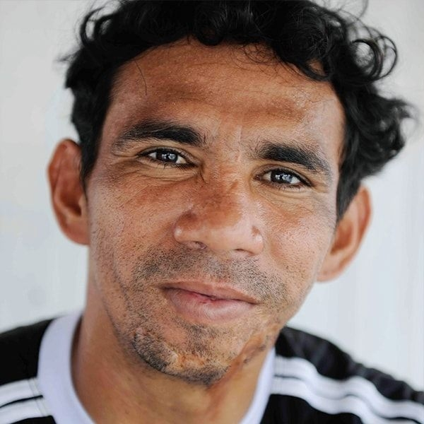
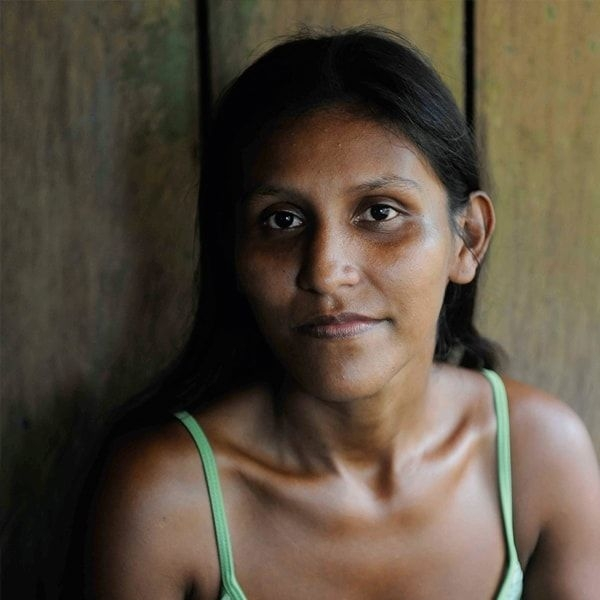
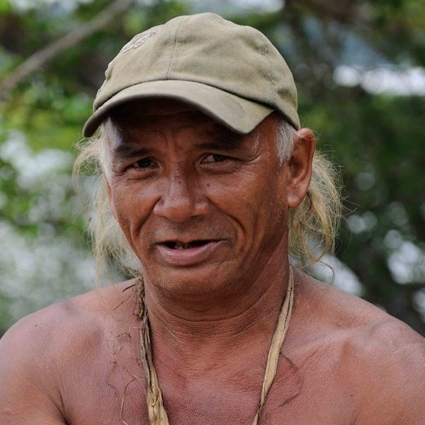
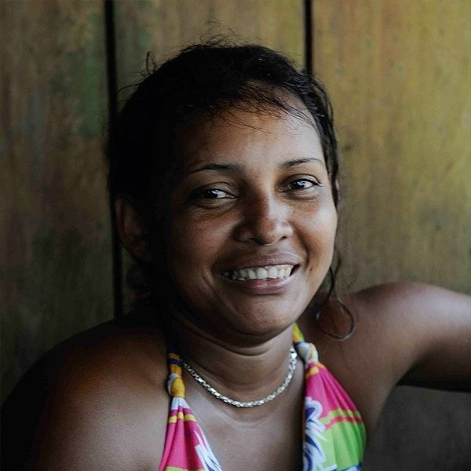
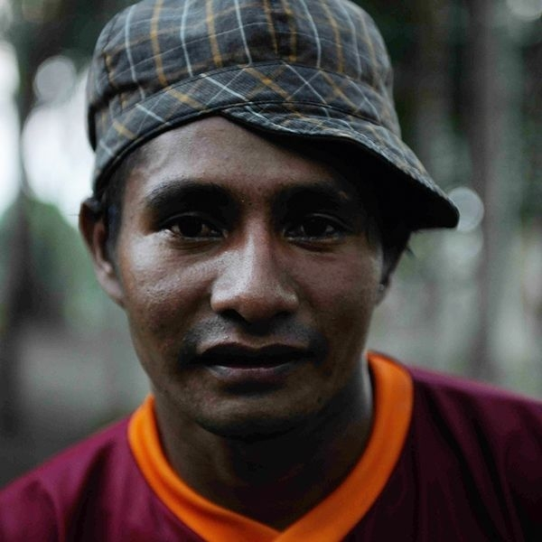

Everyone in the community has a role to play to keep the Coop Xixuaú alive. Here are just a few of the important people who depend on the natural resources of the Amazon and hence act as guardians of the rainforest.

Elinho
Formerly inheriting his leadership skills from the favela of Manaus, Elinho, a live wire, committed to putting his energy into the service of the community. A talented mediator he is determined to build deeper and more satisfying relationships with the local politicians.

Elisama
The miracle lady and not only the wife of the president of the community who is known for grounding Elinho from the wicked ways of the favelas, Elisama is also the community secretary (and a terrific dancing partner!).
Emanuela
Lives in the community and is a leading light in the project. When she isn’t in the Village you can probably find her on a boat observing a family of giant otters.

Joao
Our forest comedian, João is a storyteller like no other but doesn’t hesitate to come back down to Earth to provide the community with their vital supply of cassava.

Naide
What would one do without Naide? The solver of all the problems, the ultimate jungle housekeeper! Naide is the preferred cook of the jungle

Zezinho
Our "professional diver", the first in the river to fix a damaged propeller, Zezinho is not only good at repairing old engine, he is also the director of the communit